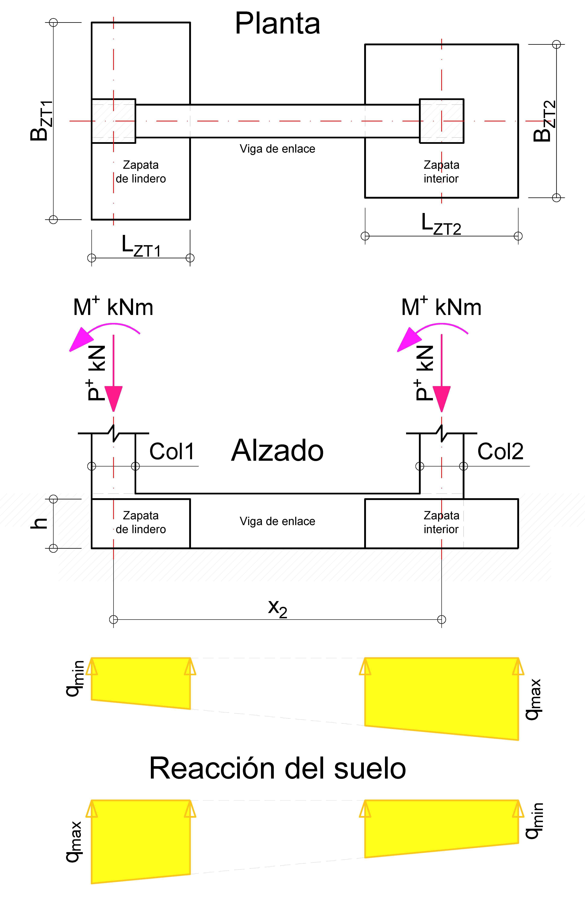
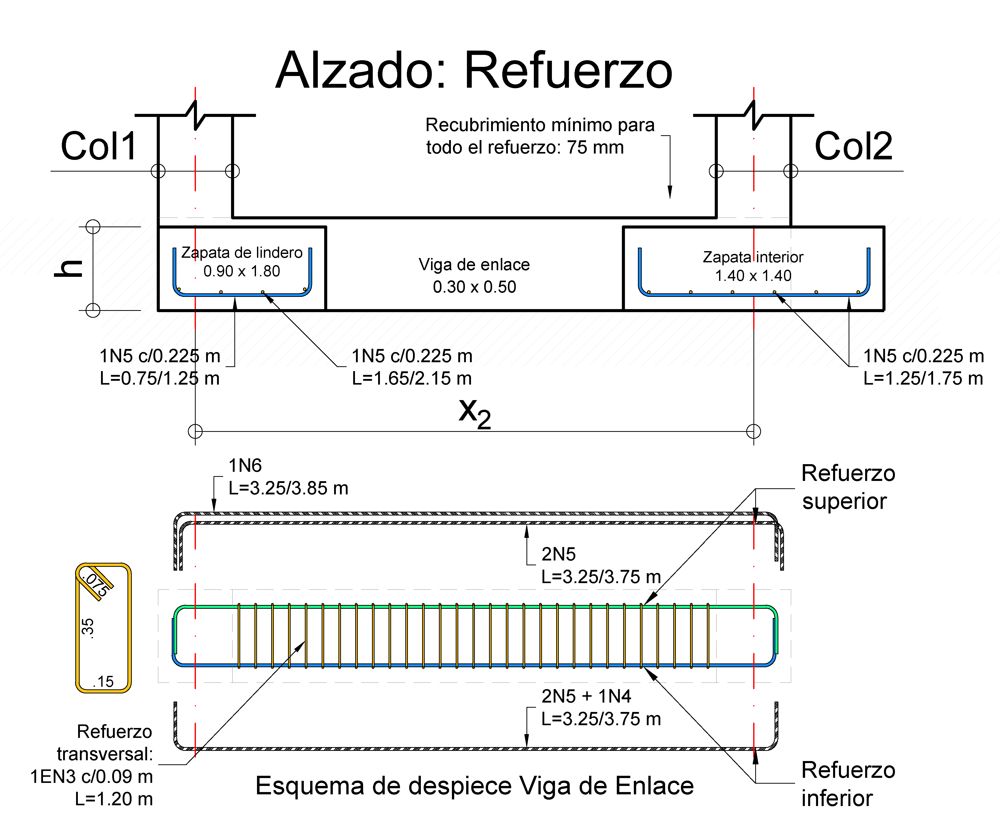

Aprender haciendo. Comprender antes de detallar.
Diseño de Zapata Excéntrica (Lindero)
Índice de Contenido
Diseño de Zapata Excéntrica (Lindero)
Criterios de diseño
En COL1, la restricción del lindero impide extender la zapata hacia el exterior, por lo que el eje de la columna no coincide con el centroide geométrico de la base. Esta excentricidad introduce una condición de equilibrio que no se resuelve considerando la zapata de lindero de forma aislada. Por ello, se conecta con la zapata interior Z.COL2 mediante una viga de enlace, que permite considerar las acciones transmitidas entre ambas bases dentro de un mismo sistema. El análisis busca determinar la distribución de presiones de contacto compatible con el equilibrio global y evaluar si la geometría adoptada resulta adecuada para las condiciones de carga consideradas.

Figura 1: Modelo y Equilibrio: Zapata de Lindero Conectada por Viga de Enlace.
Para este ejemplo adoptaremos un modelo simplificado de equilibrio. El conjunto formado por las zapatas Z.COL1 y Z.COL2 y la viga de enlace se idealiza como un sistema rígido, cuyo comportamiento se determina mediante el equilibrio global. Esta idealización constituye una hipótesis de análisis para este ejercicio y no una representación universal del comportamiento real del sistema. Bajo este modelo, se adoptan las siguientes hipótesis para determinar las presiones de contacto:
- Comportamiento global: las dos zapatas y la viga de enlace forman un único sistema idealizado como rígido, sometido a las fuerzas y los momentos transmitidos por las columnas COL1 y COL2.
- Presión de contacto: se adopta una distribución lineal de presiones sobre las áreas de las dos zapatas, compatible con el equilibrio global del sistema. La reacción del terreno actúa únicamente sobre dichas áreas; no se considera apoyo del suelo bajo el tramo libre de la viga de enlace.
- Viga de enlace: conecta ambas bases y transmite las acciones necesarias para el equilibrio del conjunto. Su diseño estructural se realiza posteriormente a partir de las acciones obtenidas para las combinaciones de carga correspondientes.
Alcance: se trata de una idealización simplificada para el análisis y diseño del ejemplo. Los resultados representan la respuesta del sistema bajo las hipótesis adoptadas y deben contrastarse con las verificaciones de equilibrio, contacto y capacidad portante correspondiente.
Los siguientes indicadores permiten evaluar la calidad del predimensionamiento y la consistencia del equilibrio. Estos rangos son de uso académico para interpretación del comportamiento.
📊 Tabla 1. CRITERIOS ACADÉMICOS DE CONTROL| Indicador | Evaluación | Interpretación |
|---|---|---|
|
Diferencia de centroide (\( |x_r - x_c| / L \)) |
< 5% → OK 5% – 10% → Aceptable > 10% → Ajustar |
Mide la alineación entre el centro de cargas y el centro geométrico de la zapata. Combinación \( D + Live \) debe estar en el rango < 5%. Combinación \( D + 0.75(0.7E) + 0.75Live \) debe ser ≤ 10%. Combinación \( 0.6D - 0.7E \) no aplica. |
|
Diferencia de presiones (\( \Delta q / q_{min} \)) |
< 15% → OK 15% – 25% → Aceptable > 25% → Ajustar |
Evalúa el gradiente de presiones entre bordes de la zapata. Combinación \( D + Live \) debe estar en el rango < 15%. Combinación \( D + 0.75(0.7E) + 0.75Live \) debe ser ≤ 25%. Combinación \( 0.6D - 0.7E \) no aplica. |
|
Esfuerzo máximo de contacto (\( q_{max} \le q_{neto} \)) |
\( q_{max} \le q_{neto} \) → OK \( q_{max} > q_{neto} \) → Ajustar |
Verifica que la presión transmitida no supere la capacidad neta admisible del suelo. Aplica para las tres combinaciones de servicio: \( D + Live \), \( D + 0.75(0.7E) + 0.75Live \) y \( 0.6D - 0.7E \) (donde además se exige contacto completo, \( q_{min} > 0 \)). |
Nota 1 (Definición de presiones del suelo): \(q_{max}\) representa el esfuerzo máximo de contacto transmitido al terreno en el borde más solicitado del sistema; \(q_{min}\) es el esfuerzo mínimo en el borde opuesto, cuyo valor debe ser positivo (\(q_{min} > 0\)) para garantizar la ausencia de tracciones o despegue de la base; y \(q_{neto}\) es la capacidad neta admisible del suelo de cimentación (\(q_{neto} = q_{adm} - \Delta q_{peso\_propio}\)), la cual define la presión de contacto máxima que no debe ser superada por \(q_{max}\) bajo combinaciones de servicio.
Nota 2 (Definición de variables del indicador de centroide): En la expresión \(\frac{|x_r - x_c|}{L}\), el numerador \(|x_r - x_c|\) representa la excentricidad o separación entre la ubicación de la resul global de cargas (\(x_r\)) y el centroide geométrico del área combinada de contacto (\(x_c\)). Por su parte, \(L\) corresponde a la longitud total del sistema de cimentación de borde a borde exterior (en este ejemplo, desde \(x = -0.20 \text{ m}\) hasta \(x = 3.70 \text{ m}\), obteniendo \(L = 3.90 \text{ m}\)), y no a la distancia libre entre columnas ni a la distancia entre ejes (\(S = 3.00 \text{ m}\)).
Nota 3 (Comportamiento transitorio): Bajo la combinación \( 0.6D - 0.7E \), estos indicadores pueden incrementarse debido al carácter transitorio de las acciones laterales. En estos casos se prioriza la verificación de contacto completo (\( q > 0 \)) y el control de capacidad máxima de soporte (\(q_{max} < q_{neto}\)).
Nota 4 (Signo de la acción sísmica): Aunque normativamente se deben evaluar ambas orientaciones de la acción sísmica (\(\pm E\)), en este análisis la combinación B.2.3-8 se presenta con \( +E \) ya que, para las solicitaciones de este ejemplo, esta orientación puede maximizar el momento y la carga transmitida por la zapata de lindero (Z.COL1), de acuerdo con los criterios de evaluación de la Tabla 1. De manera análoga, la combinación B.2.3-10 (\( 0.6D - 0.7E \)) se evalúa con \(- E \) para inducir una condición desfavorable de descompresión, al oponer la acción sísmica a la menor carga vertical del sistema. Se busca así examinar la reducción de las presiones de contacto y la posible tendencia al levantamiento o a la pérdida de contacto. La orientación seleccionada responde al propósito de este ejemplo y debe comprobarse frente a los efectos de ambas direcciones sísmicas.
1. Reacciones Base
Control de Estabilidad
📊 TABLA 2. Reacciones Base del Modelo (kN, kNm)| Componente | P1 (Vertical) [kN] | M1 (Momento) [kNm] | P2 (Vertical) [kN] | M2 (Momento) [kNm] |
|---|---|---|---|---|
| Muerta (D) | 200.0 | 5.0 | 300.0 | 0.0 |
| Viva (Live) | 40.0 | 0.0 | 50.0 | 0.0 |
| Sismo (E) | 30.0 | 30.0 | 5.0 | 30.0 |
Convención de momento positivo en este ejemplo: sentido antihorario.
- Distancia entre ejes (S): 3.00 m
- Sección Columnas: 0.40 x 0.40 m
- Esfuerzo Admisible (q_adm): 200 kPa
- Espesor h: 0.45 m | q_neto: 189.2 kPa
- Z.COL1 (Relación 2:1): 0.90 m x 1.80 m
- Z.COL2 (Relación 1:1): 1.40 m x 1.40 m
- Área Z.COL1: 1.62 m² | Área Z.COL2: 1.96 m²
2. Dimensionamiento de Bases
Relación de aspecto y capacidad neta del suelo
Partiendo de una altura o espesor de zapata \( h = 0.45 \text{ m} \) (dimensionada por anclaje de barras No. 5):
Para este caso de estudio, se asume que la zapata se encuentra a ras del terreno natural (sin capa de suelo de relleno encima, es decir, \( h_{relleno} = 0 \)), por lo cual se descuenta únicamente el peso propio del concreto (\( \gamma_c = 24 \text{ kN/m}^3 \)):
Nota de criterio: Si existiera un espesor de relleno de suelo sobre la zapata (\( h_{relleno} = D_f - h \)), se debería descontar adicionalmente la presión ejercida por dicha capa de tierra (\( \gamma_{suelo} \cdot h_{relleno} \)).
| Combinación (NSR-10) | P1 (kN) | M1 (kNm) | P2 (kN) | M2 (kNm) |
|---|---|---|---|---|
| B.2.3-2: D + Live | 240.0 | 5.0 | 350.0 | 0.0 |
| B.2.3-8: D + 0.75(0.7E) + 0.75Live | 245.8 | 20.8 | 340.1 | 15.8 |
| B.2.3-10: 0.6D - 0.7E | 99.0 | -18.0 | 176.5 | -21.0 |
Relación de aspecto adoptada para el dimensionamiento inicial: \(\Delta Y / \Delta X = 2.0\).
- \( P_{D+Live} = 240 \text{ kN} \)
- \( A_{\mathrm{req}} = \frac{240}{189.2} = 1.27 \text{ m}^2 \)
- Como \(\Delta Y = 2\Delta X\):
- \(\Delta X \cdot (2\Delta X) = 1.27 \rightarrow \Delta X = \sqrt{\frac{1.27}{2}} = 0.80 \text{ m}\)
- \(\Delta Y = 2(0.80) = 1.60 \text{ m}\)
Relación de aspecto adoptada para el dimensionamiento inicial: \(\Delta Y / \Delta X = 1.0\) (Cuadrada).
- \( P_{D+Live} = 350 \text{ kN} \)
- \( A_{\mathrm{req}} = \frac{350}{189.2} = 1.85 \text{ m}^2 \)
- Como \(\Delta Y = \Delta X = L_{Z.COL2}\):
- \( L_{Z.COL2}^2 = 1.85 \rightarrow L_{Z.COL2} = \sqrt{1.85} = 1.36 \text{ m} \)
Las áreas calculadas (\(1.27 \text{ m}^2\) y \(1.85 \text{ m}^2\)) corresponden a un predimensionamiento basado únicamente en la carga vertical directa de cada columna (\(P_{D+L}\)). Debido a la interacción con la viga de enlace y la redistribución del sistema, se adoptan dimensiones ligeramente mayores (\(1.62 \text{ m}^2\) y \(1.96 \text{ m}^2\)), las cuales se verifican formalmente en las siguientes secciones mediante los criterios académicos enunciados en la Tabla 1.
Determinamos el centro de gravedad del área de contacto del sistema (ambas zapatas) respecto al eje de COL1 (x = 0):
| Elemento | Área (\(A_i\)) [m²] | Brazo (\(x_i\)) [m] | Momento de Área (\(A_i \cdot x_i\)) |
|---|---|---|---|
| Zapata Z.COL1 (0.9x1.8) | 1.62 | 0.25 | 0.405 |
| Zapata Z.COL2 (1.4x1.4) | 1.96 | 3.00 | 5.880 |
| TOTALES | \(\Sigma A = 3.58\) | --- | \(\Sigma M_x = 6.285\) |
Nota técnica: El brazo \(x_1 = 0.25 \text{ m}\) surge de la condición de lindero: la columna (40 cm) está al borde, situando su eje a 20 cm del límite. Como la zapata tiene 90 cm, su centro está a 45 cm del borde, es decir, a \(45 - 20 = 25 \text{ cm}\) del eje de la columna.
Observen que la zapata de lindero (Z.COL1) se plantea con una dimensión reducida en la dirección de la viga de enlace (\(\Delta X = 0.90 \text{ m}\)) y una mayor en sentido transversal (\(\Delta Y = 1.80 \text{ m}\)). Esta elección responde a un criterio fundamental: como el borde exterior de esa zapata debe coincidir con el lindero, aumentar su dimensión en X desplaza el centroide de la base de esa zapata respecto al eje de la columna e incrementa su excentricidad geométrica. En consecuencia, la viga de enlace puede verse sometida a mayores solicitaciones de momento.
Por eso, en este dimensionamiento inicial se busca obtener el área de contacto requerida sin extender innecesariamente la zapata de lindero (Z.COL1) hacia el interior del terreno. La dimensión transversal permite ganar área sin aumentar en la misma proporción su excentricidad en X. Estas dimensiones constituyen un punto de partida para el análisis del sistema; se ajustarán si las verificaciones posteriores de presiones de contacto y equilibrio lo requieren.
3. Análisis de Presiones de Servicio
Verificación de Excentricidad y Delta de Presiones
Ubicamos el origen \( x = 0.00 \text{ m} \) en el eje de la columna de lindero (COL1). Las extensiones de las bases respecto a este eje son:
- • Borde exterior: \( x_1i = -0.20 \text{ m} \)
- • Eje Columna 1: \( x_1 = 0.00 \text{ m} \)
- • Borde interior: \( x_1j = 0.70 \text{ m} \)
- Longitud: 0.90 m
- • Borde interior: \( x_2i = 2.30 \text{ m} \)
- • Eje Columna 2: \( x_2 = 3.00 \text{ m} \)
- • Borde exterior: \( x_2j = 3.70 \text{ m} \)
- Longitud: 1.40 m
Nota: La viga de enlace conecta ambas zapatas y permite transmitir las acciones necesarias para el equilibrio del sistema. Este sistema de coordenadas facilita la formulación del equilibrio global respecto a un único eje de referencia (COL1) y la obtención de la resultante.
Con base en el modelo de equilibrio global presentado al inicio, el conjunto constituido por las zapatas Z.COL1 y Z.COL2 y la viga de enlace se idealiza como un sistema rígido. La reacción del terreno se representa mediante una única función lineal de presión de contacto, \(q(x)=mx+b\), común a ambas bases y aplicada únicamente sobre sus áreas de apoyo; no se considera reacción del suelo bajo el tramo libre de la viga. Los parámetros \(m\) y \(b\) se determinan imponiendo simultáneamente el equilibrio global de fuerzas verticales (\(\sum F_y=0\)) y de momentos (\(\sum M=0\)).
Para las combinaciones de servicio, las presiones resultantes se utilizan para verificar que la presión de contacto sea no negativa en las áreas de apoyo y que la presión máxima no supere la capacidad admisible neta del terreno (\(q_{\max}\leq q_{\mathrm{adm,neto}}\)). Posteriormente, las combinaciones últimas se analizan bajo el mismo esquema de equilibrio para obtener las presiones de contacto utilizadas en el diseño de la viga de enlace y de cada zapata.
Figura 2: Distribuciones idealizadas de las presiones de contacto para las combinaciones de servicio analizadas. El diagrama se interrumpe en el vano libre de la viga de enlace (\(x=0.70\) a \(x=2.30\)), donde no se considera reacción del terreno. Bajo la hipótesis de bases rígidas y distribución lineal de presiones, la reacción del suelo varía linealmente sobre cada zapata. Las presiones positivas se representan hacia abajo para indicar la reacción ascendente del terreno.
| Combinación de Servicio | Z.COL1 (Lindero) \(x \in [-0.2, 0.7]\) |
Z.COL2 (Interna) \(x \in [2.3, 3.7]\) |
|---|---|---|
| B.2.3-2: D + Live | \(q_{x=-0.2} \approx 162.3 \text{ kPa}\) | \(q_{x=3.7} \approx 167.3 \text{ kPa}\) |
| B.2.3-8 (+E): D+0.75(0.7E)+0.75Live | \(q_{x=-0.2} \approx 175.9 \text{ kPa}\) | \(q_{x=3.7} \approx 151.5 \text{ kPa}\) |
| B.2.3-8 (-E): D-0.75(0.7E)+0.75Live | \(q_{x=-0.2} \approx 135.0 \text{ kPa}\) | \(q_{x=3.7} \approx 171.7 \text{ kPa}\) |
| B.2.3-10 (+E): 0.6D + 0.7E | \(q_{x=-0.2} \approx 108.2 \text{ kPa}\) | \(q_{x=3.7} \approx 73.2 \text{ kPa}\) |
| B.2.3-10 (-E): 0.6D - 0.7E | \(q_{x=-0.2} \approx 53.7 \text{ kPa}\) | \(q_{x=3.7} \approx 100.1 \text{ kPa}\) |
Se destacan a continuación las combinaciones representativas para la interpretación de los indicadores. Los resultados de las cinco combinaciones se presentan en el diagrama y la Tabla 4.
• Centroide: \(x_c = \mathbf{1.756 \text{ m}}\)
• Dif. Centroide: 0.4% (OK)
• Dif. Presiones: 3.1% (OK)
\(q_{izq}: 162.3\) | \(q_{der}: 167.3\) kPa
• Centroide: \(x_c = \mathbf{1.756 \text{ m}}\)
• Dif. Centroide: 2.0% (OK)
• Dif. Presiones: 16.1% (ACEPTABLE)
\(q_{izq}: 175.9\) | \(q_{der}: 151.5\) kPa
- Diferencia relativa de presiones: 86.3 % (informativa)
- Presión mínima: 53.7 kPa
- Presión máxima: 100.1 kPa
Los umbrales académicos de la Tabla 1 para diferencia de centroide y diferencia de presiones no se aplican a esta combinación. La evaluación se centra en verificar el contacto completo y la capacidad portante.
Para la combinación \(D - 0.75(0.7E) + 0.75L\), la diferencia relativa de presiones es del 27.2 %, ligeramente superior al umbral académico del 25 % definido en la Tabla 1. Esto indica que la distribución de presiones supera el rango de uniformidad adoptado para la evaluación académica. No implica por sí solo un incumplimiento de la capacidad portante ni pérdida de contacto; estos aspectos se verifican por separado.
Para la combinación \(0.6D-0.7E\), el modelo arroja presiones de contacto positivas en ambas zapatas: \(q_{\min}=53.7\ \text{kPa}\) y \(q_{\max}=100.1\ \text{kPa}\). Por tanto, bajo las hipótesis adoptadas, se mantiene el contacto completo con el terreno y no se supera la capacidad neta admisible de \(189.2\ \text{kPa}\). El valor elevado de la diferencia relativa de presiones no implica por sí mismo despegue: debe interpretarse junto con las presiones absolutas y las verificaciones de contacto y capacidad portante. Estos resultados corresponden a las comprobaciones efectuadas en este modelo y no sustituyen las demás verificaciones del diseño definitivo.
En todas las combinaciones analizadas, el esfuerzo mínimo es positivo (\(q > 0\)), garantizando contacto total en ambas bases. Además, los picos de presión (175.9 kPa) son inferiores al \(q_{neto}\) de 189.2 kPa.
A diferencia de una zapata combinada rectangular, el suelo reacciona bajo las dos bases independientes, no bajo el tramo central de la viga de enlace. Esta viga transmite las acciones necesarias para el equilibrio del sistema; la compatibilidad de desplazamientos y los asentamientos dependen de la rigidez de los elementos y de la interacción con el suelo.
4. Análisis Estructural (Estado Límite Último)
Presiones Mayoradas y Diagramas de Esfuerzos Internos (\(V_u, M_u\))
Las presiones presentadas a continuación se utilizan para el diseño por resistencia (concreto y acero). Se han calculado integrando las cargas mayoradas sobre el área real de las bases adoptadas.
Figura 3: Diagrama de presiones de contacto para las combinaciones últimas de diseño analizadas.
| Combinación de Diseño (ELU) | Zapata Z.COL1 (Lindero) [kPa] | Zapata Z.COL2 (Interna) [kPa] | ||
|---|---|---|---|---|
| \(q_{x=-0.2}\) | \(q_{x=0.7}\) | \(q_{x=2.3}\) | \(q_{x=3.7}\) | |
| B.2.4-2: 1.2D + 1.6Live | 205.7 | 206.7 | 208.4 | 210.0 |
| B.2.4-5 (+E): 1.2D + E + Live | 228.2 | 216.4 | 195.4 | 177.0 |
| B.2.4-5 (-E): 1.2D - E + Live | 150.3 | 165.3 | 192.0 | 215.4 |
| B.2.4-7 (+E): 0.9D + E | 160.4 | 148.9 | 128.5 | 110.7 |
| B.2.4-7 (-E): 0.9D - E | 82.5 | 97.9 | 125.2 | 149.1 |
Se observa el cambio de gradiente bajo carga sísmica (B.2.4-5).
Las presiones mayoradas del suelo se consideran como acciones distribuidas sobre las áreas de contacto de ambas zapatas. Con estas acciones y las fuerzas transmitidas por las columnas, se analiza la viga de enlace para obtener sus diagramas de cortante (V) y momento (M). No se considera reacción del suelo a lo largo del vano libre de la viga.
Figura 4: Diagrama de cortante último \(V_u\) para el sistema de cimentación. Los cambios pronunciados de pendiente representan las zonas en las que se ubican las columnas, evidenciando cómo sus cargas concentradas se transfieren a lo largo de su ancho real (c=0.40m). En contraste, el tramo libre de la viga de enlace mantiene un cortante constante para cada combinación, al no existir fuerzas externas adicionales en ese segmento.
Figura 5: Diagrama de momento flector último \(M_u\) (kNm) para el conjunto zapata-viga.
El diseño debe cubrir la envolvente completa de momentos. Debido a la excentricidad del sistema, se producen momentos negativos máximos (tracción superior) en el tramo de la viga de enlace. Paralelamente, se dispondrá refuerzo inferior en las zonas de los voladizos para absorber los momentos positivos generados por las reacciones del suelo y concentraciones de esfuerzos bajo las columnas.
5. Diseño de Viga de Enlace
📊 Puntos de Interés en Diagramas (\(V_u\), \(M_u\))
Del análisis global se identifican las combinaciones que se emplearán en el diseño de la viga de enlace. A continuación se presentan los diagramas de cortante y momento correspondientes a (1.2D+1.6L) y (1.2D+E+L), utilizados para desarrollar las verificaciones y el diseño del refuerzo.
Nota: El tramo entre zapatas trabaja con cortante prácticamente constante entre \(x=0.7\) y \(x=2.3\).
Nota: El acero principal (superior) se diseña con el momento negativo máximo del vano.
Bajo la combinación B.2.4-5, el efecto sísmico modifica el gradiente de presiones, incrementando la demanda en la zapata de lindero (Z.COL1).
Este cambio se refleja directamente en los diagramas, generando una envolvente de momentos que controla el diseño del refuerzo superior en la viga de enlace.
Por esta razón, el acero longitudinal debe verificarse considerando ambas combinaciones, adoptando siempre la condición más desfavorable.
| Localización (\(x\)) | Solicitación Crítica de Diseño | Cortante Crítico \(V_u\) [kN] | Momento Crítico \(M_u\) [kNm] |
|---|---|---|---|
| \(x = 0.20 \text{ m}\) | Cara Interna COL1 (Confinamiento) | 155.8 | — |
| \(x \approx 0.58 \text{ m}\) | Momento Negativo Máx (Bajo Zapata COL1) | — | -92.7 |
| \(x = 2.80 \text{ m}\) | Cortante Máximo Global (Cara Interna COL2) | 184.6 | — |
| \(x = 3.00 \text{ m}\) | Momento Positivo Máx (Eje COL2) | — | +58.6 |
- Sección Adoptada: 300 mm x 500 mm
- Rigidez: \(h \approx L/6\)
- Refuerzo Transversal: Estribos No. 3 (2 ramas)
- Zonas de Confinamiento: @ 100 mm (1.0m desde caras)
\(\phi V_n = 254 \text{ kN} > V_u = 184.6\) - Zona Central: @ 200 mm
\(\phi V_n = 162 \text{ kN}\)
- Refuerzo Superior (Negativo):
2 No. 5 + 1 No. 6
\(\phi M_n = 98 \text{ kNm} > 92.7 \text{ kNm}\) - Refuerzo Inferior (Positivo):
2 No. 5 + 1 No. 4 (Mayor al refuerzo mínimo), refuerzo mínimo según C.10.5.1: \(406 \text{ mm}^2\) - Refuerzo Longitudinal continuo: se disponen barras continuas, sin empalmes por traslapo a lo largo del vano. Esta decisión evita ubicar empalmes en una longitud reducida y facilita el detallado. Cuando sean aplicables los requisitos de C.21.5.2.3 de la NSR-10, deberán respetarse las restricciones de ubicación y confinamiento establecidas para los empalmes.
Por disposición expresa de la NSR-10 C.21.12.3.3, las vigas de cimentación que forman parte del sistema de resistencia sísmica deben cumplir con los requisitos de detallado y capacidad de vigas de pórticos especiales (C.21.5). El cortante de diseño por capacidad (\(V_e\)) se calcula entre las caras de los nudos que delimitan el elemento.
| Parámetro de Diseño | Valor / Expresión | Referencia NSR-10 | Observación Técnica |
|---|---|---|---|
| Luz Libre del Nudo (\(L_n\)) | \(2.60\text{ m}\) | C.21.5.1.1 / C.21.5.4.1 | Entre caras internas de columnas (delimitación del nudo estructural) |
| Cortante por Inversión (\(V_{sway}\)) | \(\frac{134 + 107}{2.60} = \mathbf{92.7\text{ kN}}\) | C.21.5.4.1 (a) | Basado en momentos probables \(M_{pr}\) en los extremos de la luz libre |
| Contribución Carga Gravitacional (\(V_g\)) | \(\approx 15.0\text{ kN}\) | C.21.5.4.1 (b) | Obtenido de la combinación de carga \(1.2D + 1.0L\) sobre el vano |
| Cortante Total por Capacidad (\(V_e\)) | \(107.7\text{ kN}\) | \(V_e = V_{sway} + V_g\) | \(\phi V_n = 254\text{ kN} > V_e\) (Cumple ampliamente) |
- Trayectoria de las fuerzas sísmicas: A.3.1.5 y A.3.7 establecen el marco para considerar los efectos sísmicos en la cimentación y su conexión con el sistema de resistencia sísmica.
- Requisitos de detallado: C.21.12.3.3 remite a C.21.5 para las vigas de cimentación y los elementos allí descritos que estén sometidos a flexión por las columnas pertenecientes al sistema de resistencia ante fuerzas sísmicas. Debe revisarse su aplicabilidad según las condiciones del elemento.
- Luz libre para el cálculo de \(V_e\): C.21.5.4 establece el procedimiento de cortante por capacidad para las vigas a las que aplica. En este ejemplo se toma inicialmente \(L_n = 2.60\text{ m}\), medida entre caras de columnas, conforme a la idealización estructural adoptada. La definición de la luz pertinente debe ser coherente con el comportamiento y las condiciones de apoyo del elemento.
- En sistemas con capacidad especial de disipación de energía, el confinamiento no debe limitarse a la cara de la columna; también es recomendable confinar en la zona de empotramiento con la zapata.
- El recubrimiento de 75 mm reduce el peralte efectivo (\(d\)), afectando directamente la capacidad a flexión.
- La sección de 300 mm limita el espacio útil para acero, por lo que el detallado debe ser eficiente.
- La combinación 2 No.5 + 1 No.6 en la cara superior cumple resistencia y mejora la constructibilidad al evitar congestión.
6. Diseño de Zapatas Independientes
Estado Límite Último – Comparativa Técnica Z.COL1 vs Z.COL2
Para el diseño estructural, se determinan las presiones últimas de contacto, \(q_u(x)\), aplicando las combinaciones de resistencia al modelo de equilibrio global adoptado. Estas presiones representan las reacciones ascendentes del terreno sobre las áreas de apoyo y permiten obtener las solicitaciones de flexión, cortante unidireccional y punzonamiento de cada zapata. Las acciones correspondientes se utilizan, además, para el diseño de la viga de enlace.
Controlada por la combinación sísmica \(1.2D + 1.0E + 1.0Live\), que produce la condición más exigente para el diseño de esta zapata en el ejemplo.
Controlada por la combinación gravitacional \(1.2D + 1.6Live\), que produce la condición más exigente para el diseño de esta zapata en el ejemplo.
Los diagramas de presiones últimas de contacto para las combinaciones gobernantes se presentan en la Figura 3. A partir de ellos se obtienen las solicitaciones empleadas en las verificaciones de resistencia y en la definición del refuerzo de cada zapata.
Combo Crítico: 1.2D + E + Live (\(q_{max} = 228.2 \text{ kPa}\))
• Cortante Unid. Longitudinal (\(V_{u,x}\)):
\(V_{u,x} = 28.9 \text{ kN/m} \ll \phi V_c (214 \text{ kN/m})\) ✔
*\(V_{u,x} \approx q_{prom} \cdot (L_{v,x} - d)\)
• Cortante Unid. Transversal (\(V_{u,y}\)):
\(V_{u,y} = 86.4 \text{ kN/m} \ll \phi V_c (214 \text{ kN/m})\) ✔
*\(V_{u,y} \approx q_{max} \cdot (L_{v,y} - d) \approx 228.2 \times (0.75 - 0.37)\)
• Punzonamiento (Cara de Borde):
\(b_0 = 1.93 \text{ m} \mid \alpha_s = 30\)
\(V_u = 209.6 \text{ kN} < \phi V_n (805 \text{ kN})\) ⚠️ Preliminar
*\(V_u = P_u - (q_{prom} \cdot A_{crit})\). (Verificación preliminar por cortante directo; el diseño definitivo debe incluir el incremento de esfuerzos por transferencia de momento).
• Flexión Longitudinal (\(M_{u,y}\)):
\(M_{u,x} = 27.3 \text{ kNm/m} \rightarrow\) Controla \(A_{s,min}\) ✔
*\(M_{u,y} \approx q_{prom} \cdot L_{v,x}^2 / 2\)
Adopta: No. 5 @ 225 mm. (\(A_{s,min} = 810 \text{ mm}^2/\text{m} \mid \phi M_n = 119 \text{ kNm} \gg M_{u,y}\))
• Flexión Transversal (\(M_{u,x}\)):
Volado \(0.75 \text{ m} \rightarrow M_{u,y} = 64.2 \text{ kNm/m}\)
Controla \(A_{s,min}\) (\(\rho = 0.0018\)) ✔
*\(M_{u,x} \approx q_{max} \cdot L_{v,y}^2 / 2 = 228.2 \times 0.75^2 / 2\)
Adopta: No. 5 @ 225 mm. (\(A_{s,min} = 810 \text{ mm}^2/\text{m} \mid \phi M_n = 119 \text{ kNm} \gg M_{u,x}\))
Combo Crítico: 1.2D + 1.6Live (\(q \approx 209 \text{ kPa}\))
• Cortante Unidireccional (\(V_{u,x} \approx V_{u,y}\)):
\(V_u = 28.0 \text{ kN/m} < \phi V_c (214 \text{ kN/m})\) ✔
*\(V_u = q \cdot (L_{vol} - d) \approx 209 \times (0.50 - 0.37)\)
• Punzonamiento (Interior):
\(b_0 = 3.07 \text{ m} \mid \alpha_s = 40\)
\(V_u = 317 \text{ kN} < \phi V_n (1277 \text{ kN})\) ⚠️ Preliminar
*\(V_u = P_u - (q \cdot A_{crit}) \approx 440 - (209 \times 0.77^2)\). (Verificación preliminar por cortante directo; el diseño definitivo debe incluir el incremento de esfuerzos por transferencia de momento).
• Flexión (Simétrica):
Volado \(0.50 \text{ m} \rightarrow M_u = 26.3 \text{ kNm/m}\)
Controla \(A_{s,min}\) (\(\rho = 0.0018\)) ✔
*\(M_u = q \cdot L_{vol}^2 / 2 \approx 209 \times 0.50^2 / 2\)
Adopta: No. 5 @ 225 mm. (\(A_{s,min} = 810 \text{ mm}^2/\text{m} \mid \phi M_n = 119 \text{ kNm} \gg M_u\))
• Aplastamiento:
\(\phi R_n = 1856 \text{ kN} \gg P_u (440 \text{ kN})\) ✔
*Basado en \(A_2/A_1 = 1\) (\(\phi R_n = 0.65 \cdot 0.85 f'_c A_1\)). Con confinamiento (\(\max 2\)) \(\approx 3713 \text{ kN}\).
La zapata de lindero (Z.COL1) desarrolla mayores gradientes de presión y demanda estructural, siendo la que controla el diseño del sistema. La zapata interior (Z.COL2) presenta un comportamiento más uniforme y eficiente.
Para ambas zapatas, se debe suministrar gancho estándar a 90° (según C.12.5) en los extremos de las barras para garantizar el desarrollo del refuerzo, dado que los volados son cortos respecto a la longitud de transferencia requerida.

Figura 6: Detallado de Refuerzo.
En el modelo de viga de enlace, asumimos que la viga es lo suficientemente rígida para "recoger" las presiones del suelo. Por lo tanto, el voladizo transversal de la zapata no nace en la cara de la columna (40 cm), sino en la cara de la viga (30 cm).
¿Por qué es más conservador? Al medir desde la viga, el brazo de palanca aumenta de 0.70m a 0.75m. Ese pequeño incremento del 7% en la longitud se traduce en un aumento del 15% en el momento flector (\(L^2\)). Diseñar así garantiza que la zapata no falle en la transición viga-losa.
En zapatas con flexión en dos direcciones, las barras se cruzan. Si la capa longitudinal (sentido \(x\)) está abajo:
- Capa Inferior: \(d \approx 367 \text{ mm}\) (Máxima eficiencia).
- Capa Superior: \(d \approx 350 \text{ mm}\) (Se descuenta el diámetro de la barra de abajo).
Aunque el \(M_{uy}\) es mayor en Z.COL1, el diseño con No. 5 @ 225 mm es tan robusto que incluso con el \(d\) reducido, por ejemplo, las capacidades (\(\phi V_c=205 \text{ kN/m}\)) y (\(\phi M_n=113 \text{ kNm/m}\)) siguen estando muy por encima de la demanda.
Es fundamental comprender que este diseño estructural representa una primera fase del proyecto. En la práctica profesional, este modelo se entrega al especialista en Geotecnia, quien valida las presiones mediante sus propios modelos y avala o solicita ajustes al diseño.
Validación en Obra: Antes de fundir el concreto, el geotecnista debe realizar la inspección visual del terreno excavado. En ese momento, si las condiciones reales del suelo difieren de lo previsto en el estudio inicial, se pueden (y deben) realizar los últimos ajustes técnicos.
La ingeniería de cimentaciones es un proceso que requiere trabajo interdisciplinar.
Consultas y Discusión Académica
Inicia sesión con tu cuenta de GitHub para dejar una pregunta o comentario técnico sobre este ejemplo.